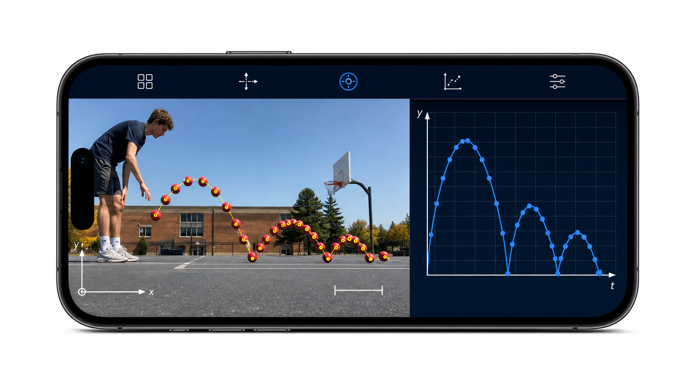

Observe
Start with authentic motion: a bounce, a throw, a collision or an oscillation that students can see and revisit frame by frame.
Video analysis turns everyday movement into evidence students can question, measure and explain.

Tracker connects familiar video with the representational tools of physics. Students can move repeatedly between the event they filmed, the measurements they made, the graph they produced and the explanation they are ready to defend.
Start with authentic motion: a bounce, a throw, a collision or an oscillation that students can see and revisit frame by frame.
Calibrate scale, set axes and mark positions so pixels and frames become quantities with physical meaning and units.
Coordinate video, graphs, vectors and models to identify patterns, test assumptions and explain what the evidence supports.
Record a phenomenon worth investigating.
Identify positions and define the measurement system.
Reveal patterns, rates of change and uncertainty.
Compare predictions directly with real-world motion.
Argue from evidence and refine the explanation.
Students do not have to begin with an idealised diagram. They can film motion from their own classroom, home or playground, decide what matters, and confront the messiness of real evidence.
A marked position belongs simultaneously to a video frame, a time value, a coordinate, a table row and a graph point. Moving among those representations helps students connect physical events with mathematical descriptions.
Tracker can overlay kinematic and dynamic particle models on the original video. A prediction is therefore not only an equation—it can be compared directly with what happened in the world.
Different choices of scale, origin, frame interval or marked position produce differences that students can inspect. That creates a natural reason to discuss uncertainty, defend decisions and revise explanations.
A well-designed Tracker task can move students through questioning, planning an investigation, analysing data, modelling, constructing explanations and arguing from evidence—not merely through clicking points.
Tracker Online preserves a powerful desktop interface in the browser. The goal of Tracker Student Mobile is different: retain the same scientific engine while making the essential learning journey practical on the phones and tablets students already carry.
Calibration, coordinate systems, tracks, graphs, tables and models remain part of the same Tracker workflow.
Project, track, measurement and axes commands are grouped; the complete menu tree remains available under More.
Large targets, direct marking and handle dragging replace desktop-only assumptions about hover, Shift-click and tiny controls.
Film a motion, mark the evidence, and let the graph begin the conversation.